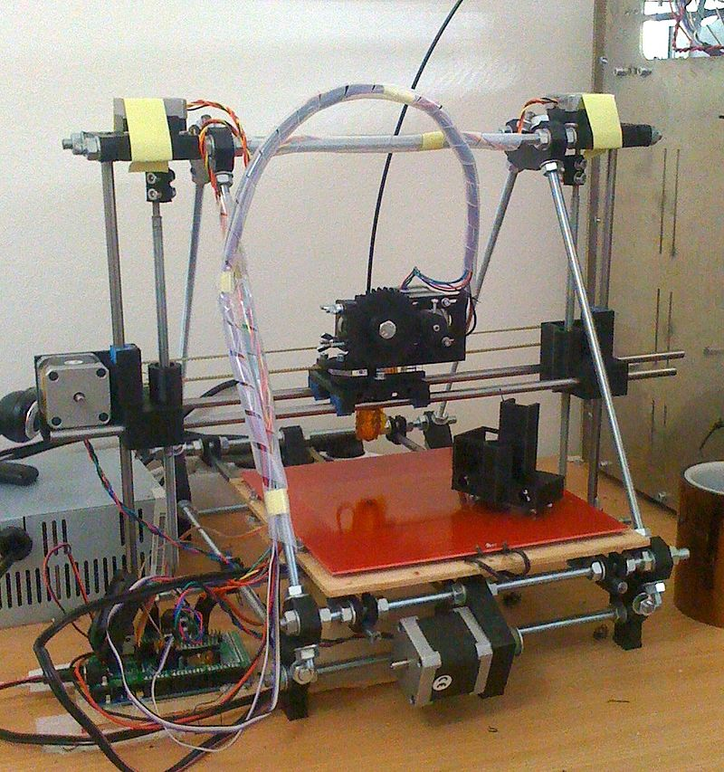
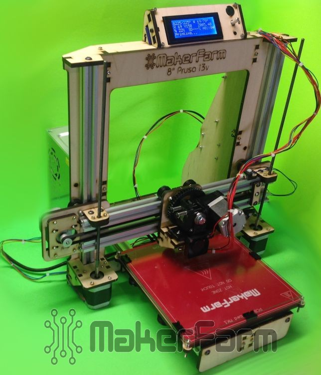
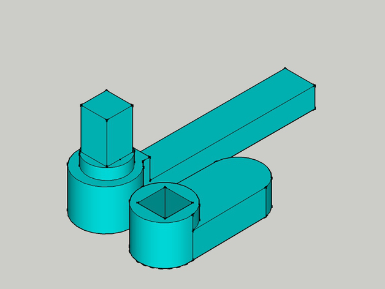
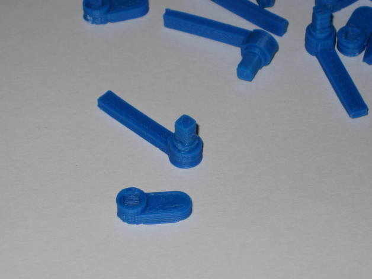

MakerFarm Prusa i3v
The best 3D printer for your buck.
About five years ago I discovered a new machine that I had never heard of before. Several websites were promoting a relatively new technology called 3D printing. CAD programs and 3D computer models had been around for years, but creating a real life replica of that abstract model was a challenge. At the time, CNC milling machines and lathes were usually the tools used to create these models. These methods were called subtractive methods because they started with a chunk of material and carved away or "subtracted" from it until the finished model was revealed.
A new method, which is additive, began to gain popularity when hobbyists started squirting molten plastic out of tiny nozzles in a very precise way to "build up" as 3D model as a bunch of layers similar to the layers of a cake or like bricks in a wall. As time passed and more hobbyists contributed their knowledge, this method of "3D Printing" has evolved and been refined. The result of these improvements is impressive. Now intricate and exact models can be built in a few hours time.
I decided that a machine like this was something that I couldn't live without, or that's what I told my wife at least. The hunt was on for a budget friendly 3D printer that wasn't too small or too big. After a couple of weeks worth of research on the internet, I discovered that a design called a "Prusa i3" was very popular and well supported. This particular 3D printer was designed by a man named Josef Prusa who worked on earlier designs like the Reprap and Prusa Mendel. The i3 is actually the third iteration of this design.
After comparing prices and figuring out that it was going to take me months to be on a waiting list for a genuine Prusa i3. I decided that a small home run company in the USA might be a better option. Enter MakerFarm and it's owner, Colin Farrer. I could save about a hundred dollars, get a complete kit, and it would arrive in about a week or two. I was thrilled!

A week and a half after ordering, a large box was deliverd via UPS and it's contents quickly examined and explored. Assembly began immediately and the machine was built without much effort. The directions were a downloaded as a PDF file and were thorough and accurate. Software links were also provided and the following morning I had the software up and running. I had ordered a roll of "PLA" plastic filament to be used on my first project as I had read that PLA was much easier to work with than it's alternative which is ABS. This proved to be true as the ABS plastic does not tend to stick to the machine's bed very well and most times the print is curled or ruined.
It took me a couple of weeks to really get the hang of designing a part, slicing into layers and setting the machine up correctly to get my own designs to print. I've made a few neat projects. The most useful were replacement window screen clips for my house. These clips hold the screen windows in their frames on my house and due to their age, were cracking and my window screens were falling out. I had tried to find replacements, but none were available. The CAD and 3D printer came to the rescue!
 